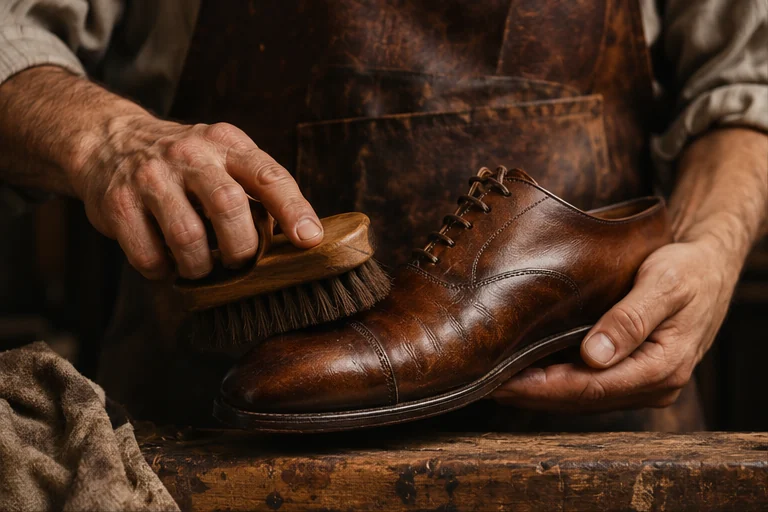
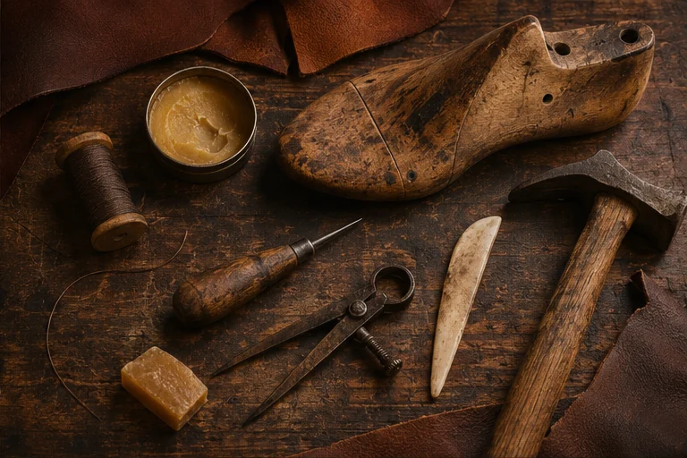
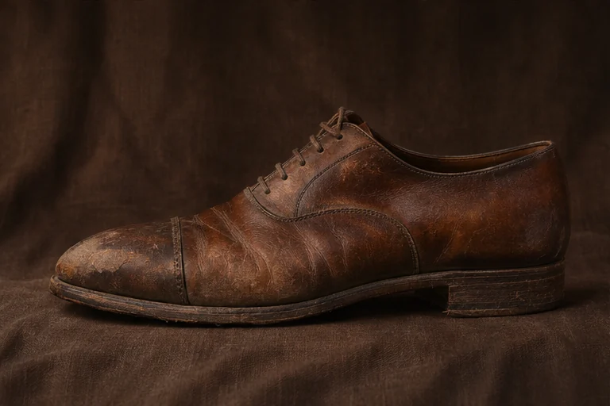
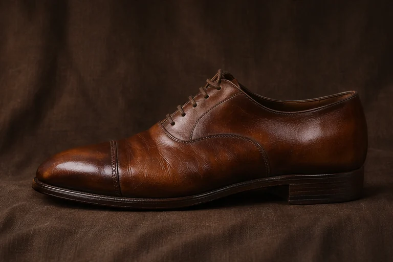

Reparación de calzado
Cuéntanos qué le pasó a tu par y envíanos fotos para consultar qué tipo de reparación necesita.
Zapatería de oficio · Roma Sur
Reparación de calzado y artículos de piel con atención al detalle, dedicación y oficio.

01 / Servicios
Cuéntanos qué le pasó a tu par y envíanos fotos para consultar qué tipo de reparación necesita.
Si tienes una pieza de piel que quieres seguir usando, escríbenos con fotos y detalles para consultar las opciones.

02 / El oficio
Un par que ya se amoldó a tu pie merece otra mirada. La reparación empieza por observar cómo se ha desgastado y qué hace falta para volver a usarlo.
03 / La transformación
Desliza el control para apreciar los cambios de textura y acabado en un zapato de piel.
Comparación ilustrativa creada para esta vista previa. Las imágenes son generadas.

Antes
Después04 / Visítanos
Antes de visitarnos, confirma el horario por WhatsApp.
Hablemos de tu par
Mándanos fotos y cuéntanos qué te gustaría reparar.
Solicitar cotización por WhatsApp